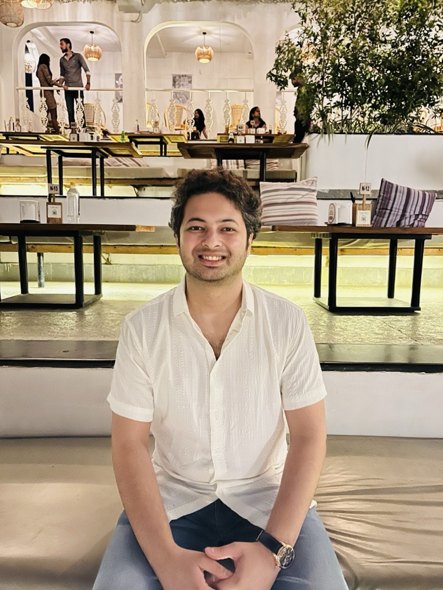

About
Life is like a box of chocolates. You never know what you're gonna get

Software Engineer @ LinkedIn.
- Blog: Visit My Blog!!
- City: Bangalore, India
- Email: ritwik.1204@gmail.com
I'm a software engineer at LinkedIn with 7+ years building and owning large-scale distributed systems and backend platforms end-to-end.
My flagship work is gRPCurli — LinkedIn's gRPC developer CLI ("curl for gRPC"), which I created and led from inception to production. Built on the open-source gRPCurl tool, it's distributed across 500k+ hosts and was integral to the company-wide migration from rest.li to gRPC. As its sole maintainer, I support teams across the org that rely on it daily — including backend, AI/ML-serving, and data teams.
I also led the design to bring gRPC service discovery and exploration into Sceptre, LinkedIn's service-exploration portal (4,000+ monthly users), which now surfaces 680+ gRPC services and their RPCs org-wide — making it far easier for engineers to find, understand, and try services when building products.
On the platform side, I've authored shared libraries and driven cross-team migrations — including a vendor-neutral incident-data abstraction that turns recurring tooling migrations into a one-line config change. I'm also tech lead for Ravens, our incident-notification platform (email, call, SMS, Slack), where I own reliability and shipped GenAI-powered incident summaries to speed up response.
Across my career I've focused on backend engineering — distributed systems, service frameworks (gRPC / rest.li), APIs, scaling, and observability — and increasingly on applying GenAI and LLMs to real engineering problems. I love tackling complex, ambiguous challenges and building robust, scalable systems that others can build on.
Outside of engineering, I'm an active investor and trader, with a keen interest in global markets and commodities.
Feel free to reach out — I'm always happy to talk distributed systems, developer platforms, AI infrastructure, or markets.
Projects
Work at LinkedIn
gRPCurli
A LinkedIn-specific CLI wrapper around gRPCurl that I built end-to-end to make gRPC services easier to call and debug. Internal
Sceptre
A service-discovery tool for exploring and experimenting with gRPC resources, APIs, and entity relationships. Internal
Ravens
A notification-subscriptions platform spanning email, calls, messages, and Slack for incident communication. Internal